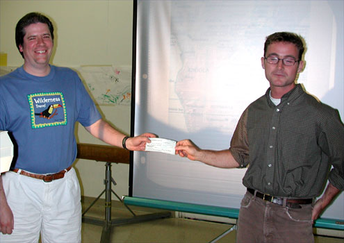

SJAA Ephemeris July 2001 |
SJAA Home |
Contents |
Previous |
Next
SJAA Ephemeris July 2001 |
SJAA Home |
Contents |
Previous |
Next
Tidbits from Here and There
Dr. Larry Lasher of NASA Ames Research Center is the project manager for Pioneer 10, the first spacecraft to venture beyond the furthest planet. At left is Dr. Lasher from the June SJAA meeting along with a 1/12 scale model of Pioneer 10. At right is Dr. Lasher near the beginning of Pioneer 10's mission! Pioneer 10 continues to operate and hopes are high that it will detect the heliopause.
|
|
Upcoming SJAA Meeting Programs
September - Slide/Equipment night
October - Jeff Moore, NASA
November - Robert Naeye, ASP, the Chandra X-Ray Observatory
School events:
Oct. 16 - Working, SE San Jose
Oct. 19 - Working, N. San Jose
SJAA President Mike Koop presents a donation check to Kevin Hand, graduate student at Stanford University. At the June meeting, Kevin made a brief presentation on his program "Under African Skies." As this goes to press, Kevin is beginning his five-week trek from Johannesburg to Nairobi visiting schools to talk with teachers and students about science, technology, and peaceful uses of outer space. For more information visit http://www.cosmoseducation.org/about/team.html
|

|
Donation
Patty Winter, sometime SJAA member and co-editor of the Ephemeris (1980), has donated a number of astronomical magazines. There are 141 issues of Sky & Telescope, mostly 1980's; and 27 of several other titles. Also three tee-shirts with astronomical / space themes. They can distributed at schools, or sold at the November swap. SJAA thanks Patty for this donation.
Mail to:
Editors
Copyright © 2001 San Jose Astronomical Association
Last updated:
February 05, 2002
Previous | Contents | Next